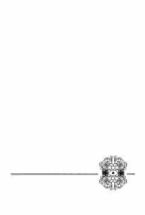

2MMirtemirning eng sara she'rlari va 'Surat' dostoni jamlangan saylanma.
Bu to'plam O'zbekiston Xalq shoiri Mirtemirning yillar sinoviga dosh berib, o'quvchilar qalbida o'chmas iz qoldirgan eng sara she'rlarini va 'Surat' dostonini o'z ichiga oladi. To'plam Farhod Hamro tomonidan tuzilgan va so'zboshi yozilgan. 2012-yilda 'Ma'naviyat' nashriyotida chop etilgan.